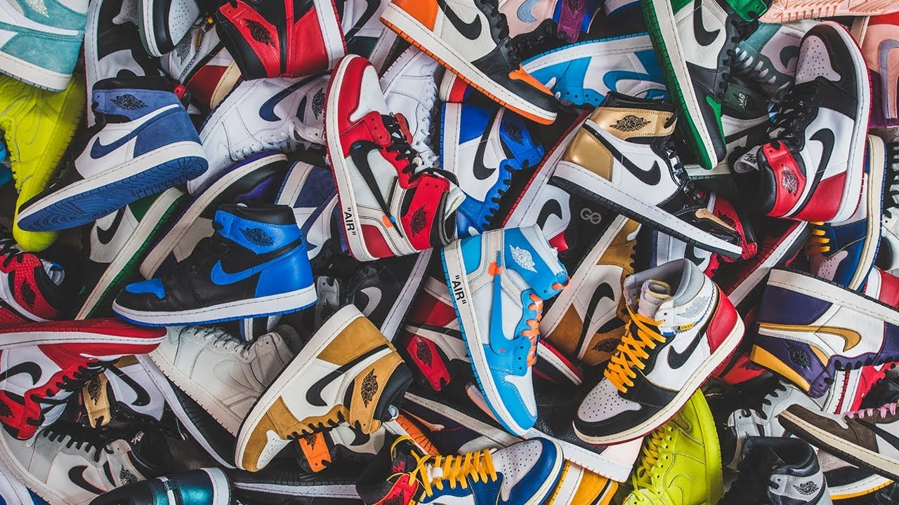
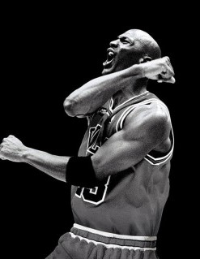

Flight Club
AIR JORDAN
Shoes were just shoes for the first 80-some-odd years of the 20th century. Then in the mid-1980s, Nike released a pair of basketball shoes featuring a certain ex-Tarheel. The Air Jordan was born, and the rest, as they say, is history.
As legend has it, the iconic Air Jordan sneaker series almost never lifted off. Soon after Michael Jordan debuted the Air Jordan I, the NBA stepped in and banned the shoe because they featured "non-regulation" colors. Suffice it to say, Jordan didn't listen and thusly, the great basketball shoe boom began.
Most Iconic Shoes by MJ23
AIR JORDAN I
AIR JORDAN XI
AIR JORDAN III
Michael Jordan
Michael Jeffrey Jordan is a former professional American basketball player, Olympic athlete, businessperson and actor. Considered one of the best basketball players ever, he dominated the sport from the mid-1980s to the late 1990s.
Jordan led the Chicago Bulls to six National Basketball Association championships and earned the NBA's Most Valuable Player Award five times. With five regular-season MVPs and three All-Star MVPs, Jordan became the most decorated player in the NBA. He brought up one of the most important and influential shoes ever, in which he call the "Air Jordan".
KEEP IN TOUCH
HOME SHOES MICHAEL JORDAN ABOUT GALLERY